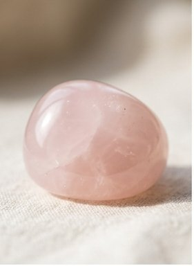
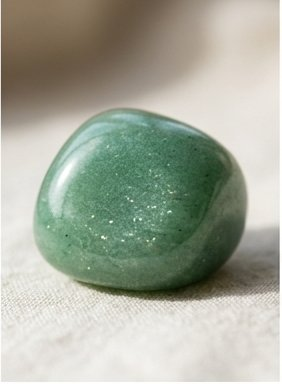
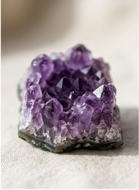
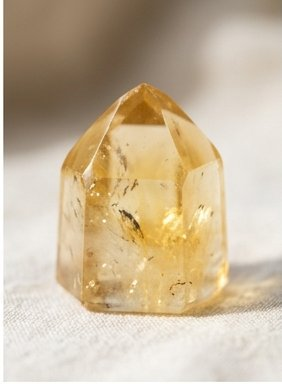
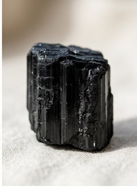
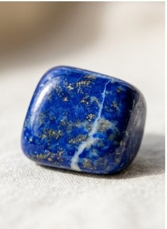
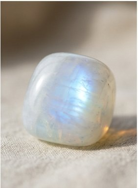
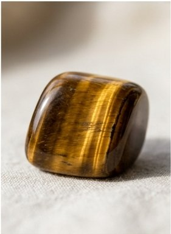
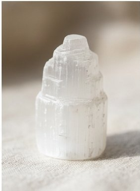
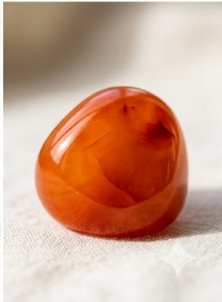

Rose Quartz
A translucent pink quartz long associated with unconditional love. Pairs with Tom Ford Rose Prick or Jo Malone Velvet Rose & Oud.
A growing public encyclopedia of natural stones and minerals — every entry pairs the geology and lore with a hand-picked perfume that matches the stone's character.

A translucent pink quartz long associated with unconditional love. Pairs with Tom Ford Rose Prick or Jo Malone Velvet Rose & Oud.

A green quartzite shimmering with fuchsite mica. Often called the "stone of opportunity". Try Hermès Un Jardin en Méditerranée.

The purple variety of quartz, named from the Greek for "not drunken". Mirrors violet-iris fragrances like Frédéric Malle Iris Poudré.

The golden-yellow quartz, the "merchant's stone" of folklore. Pairs with citrus-amber compositions: Jo Malone Lime Basil & Mandarin.

Schorl — the most common tourmaline. The archetypal protective stone. Pairs with smoky-leather compositions: Tom Ford Tobacco Vanille.

Deep blue lazurite with golden pyrite — mined in Afghanistan for over 6,000 years. Pairs with incense-tinted Etro Shaal Nur.

An orthoclase feldspar with a soft cobalt-blue inner glow (adularescence). Pairs with luminous white florals like Carnal Flower.

A chatoyant golden-brown quartz that shifts in the light. Pairs with warm spiced compositions: Estée Lauder Sensuous.

A translucent gypsum, soft enough to scratch with a fingernail. Pairs with clean white musks: Le Labo Santal 33.

A translucent orange-red chalcedony, carved into seals since the third millennium BCE. Pairs with amber-spiced YSL Opium.